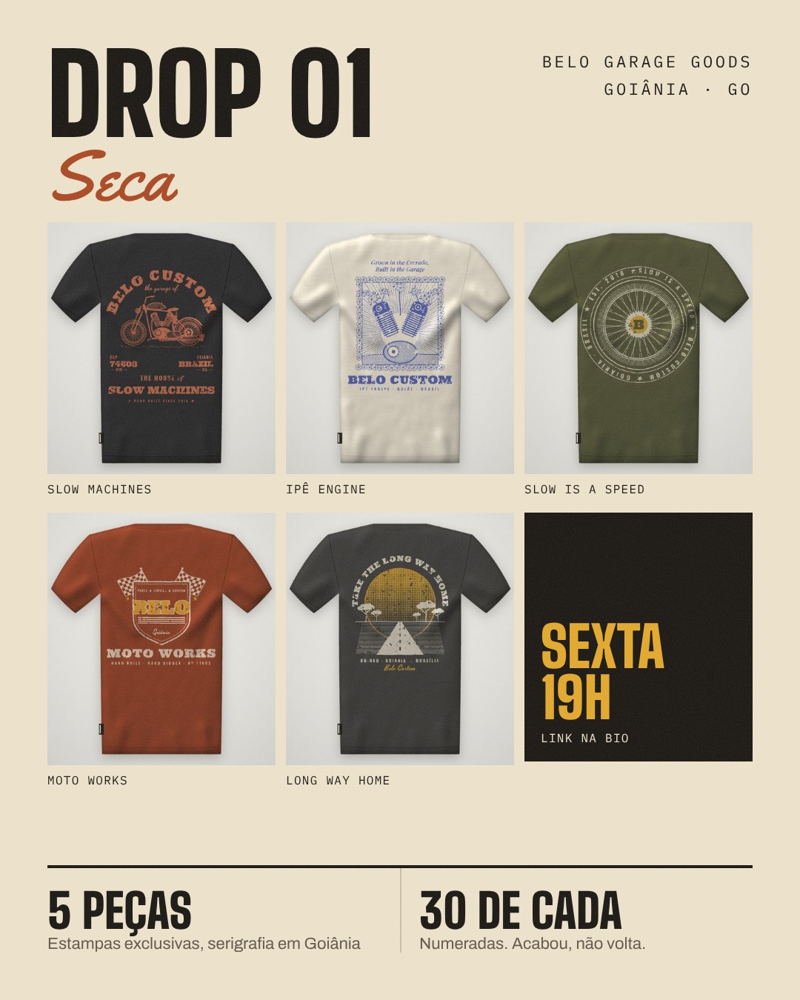
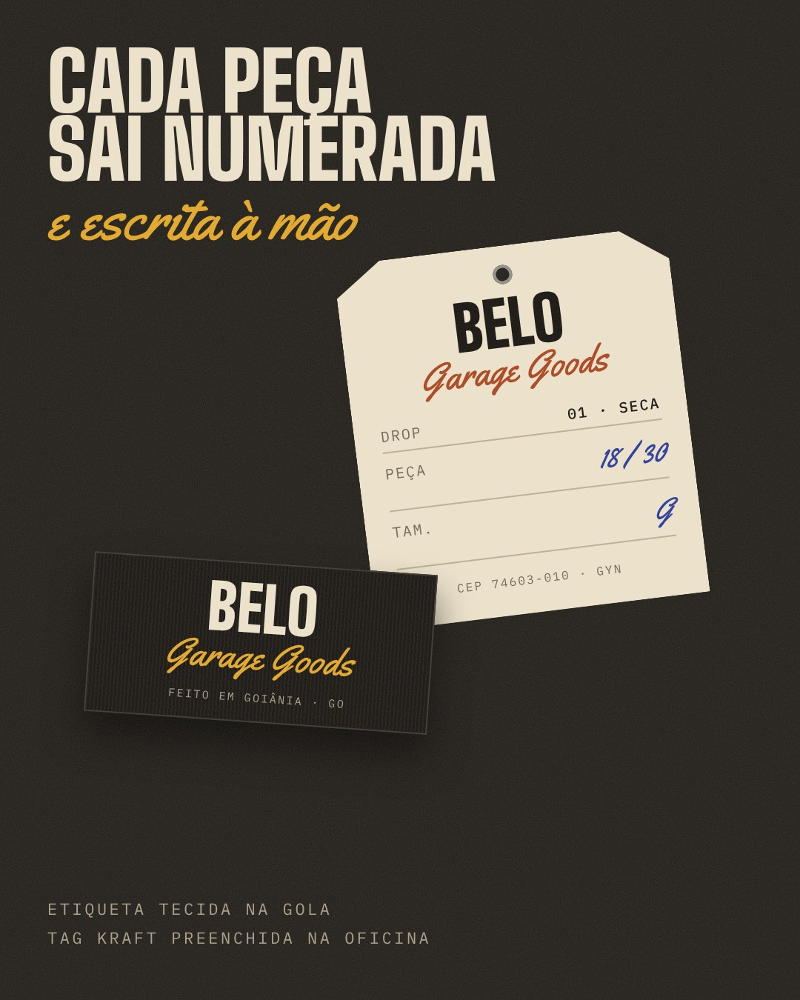
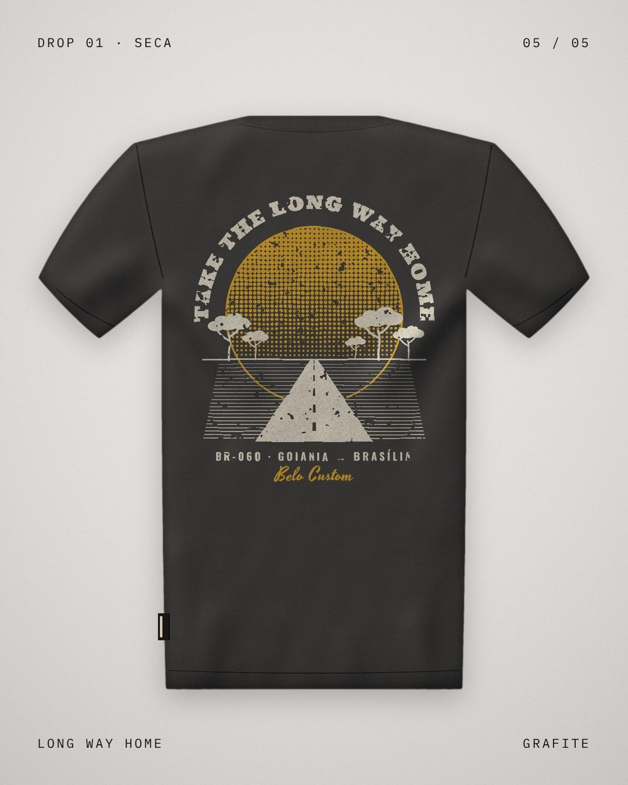
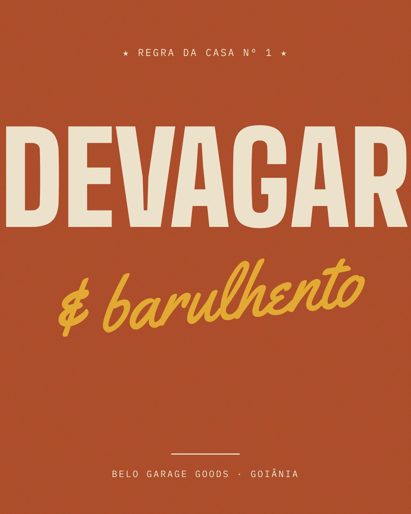
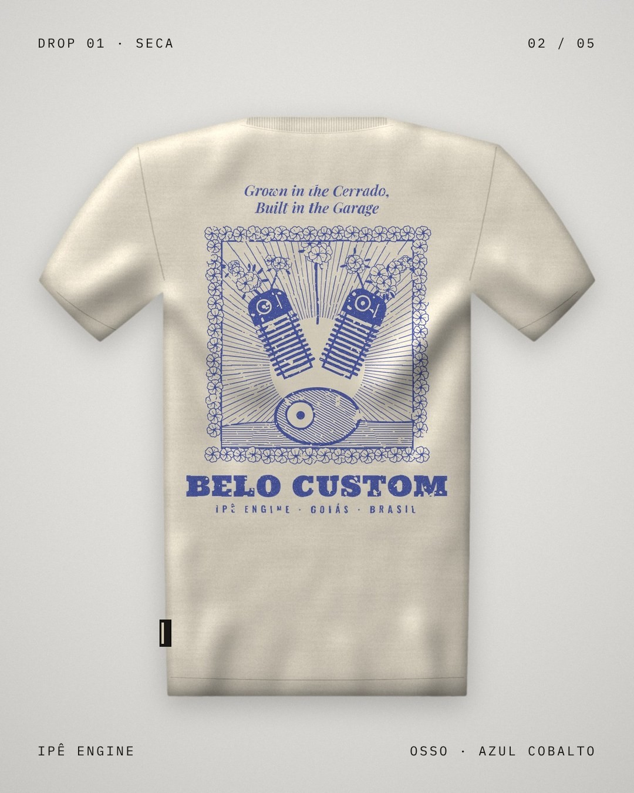
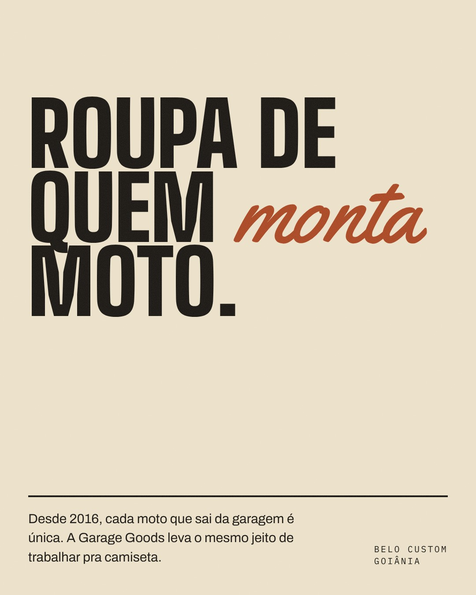
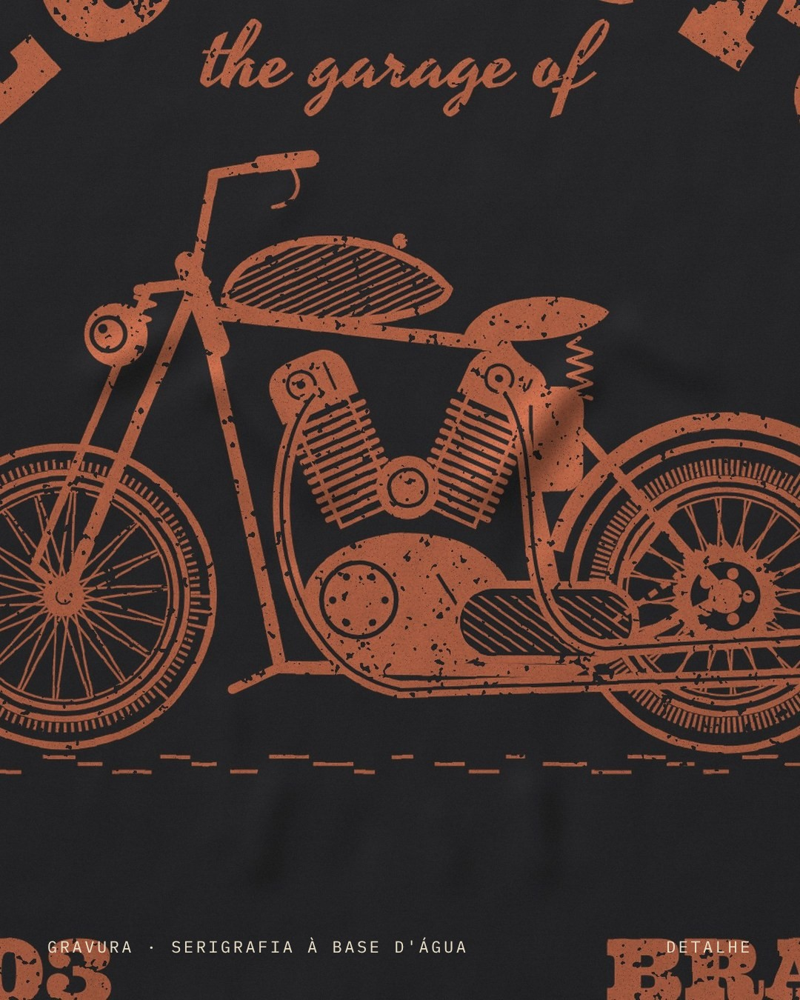
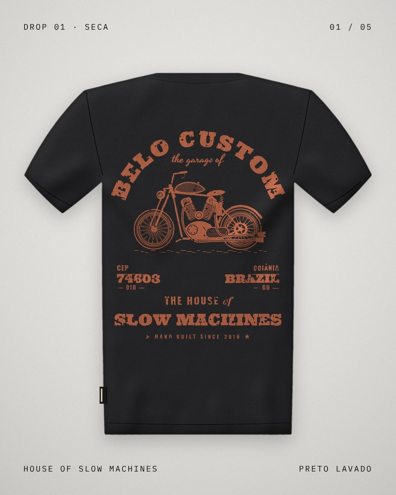
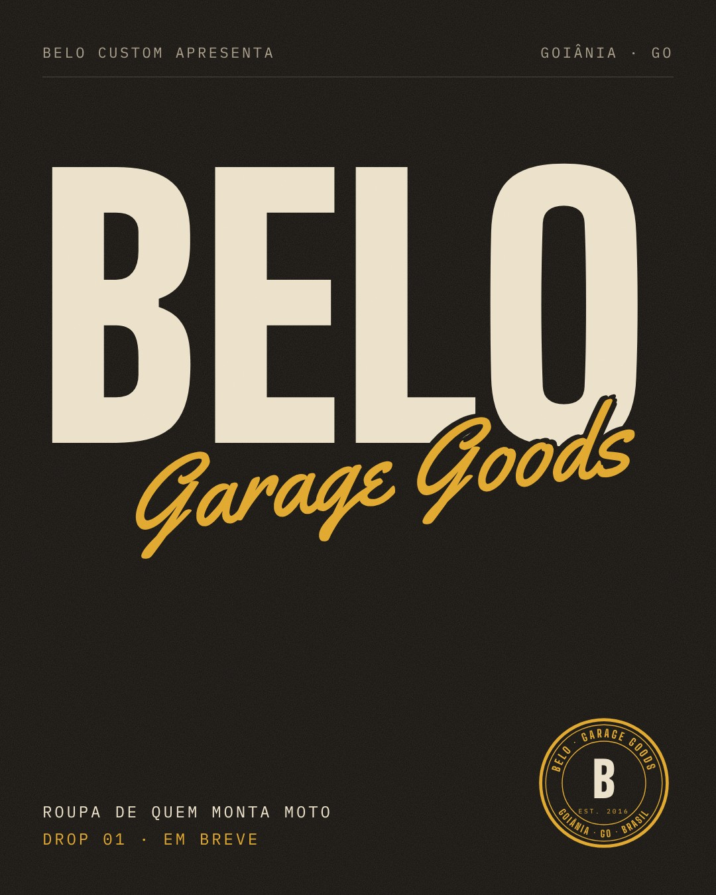

<title>Belo Garage Goods Instagram</title>
<meta name="claude:viewport-fit-sides" content="cover">
<link rel="preconnect" href="https://fonts.googleapis.com">
<link rel="preconnect" href="https://fonts.gstatic.com" crossorigin>
<link rel="stylesheet" href="https://fonts.googleapis.com/css2?family=Archivo:wght@400;500;600&family=Big+Shoulders+Display:wght@700;800;900&family=IBM+Plex+Mono:wght@400;500&family=Yellowtail&display=swap">
<style>
/* Layout: plano de feed em três partes (grade do perfil, posts com legenda na ordem de postagem, roteiro de lifestyle). Visual único escuro, igual ao livro de marca. */
:root {
  --graxa: #14110E;
  --graxa-2: #1F1B17;
  --graxa-3: #2B2621;
  --osso: #EBE0C9;
  --osso-dim: #A79C87;
  --terra: #C9572C;
  --ipe: #E0A526;
  --f-display: "Big Shoulders Display", "Oswald", "Arial Narrow", Impact, sans-serif;
  --f-script: "Yellowtail", "Brush Script MT", cursive;
  --f-mono: "IBM Plex Mono", ui-monospace, Menlo, monospace;
  --f-body: "Archivo", "Helvetica Neue", Arial, sans-serif;
  color-scheme: dark;
}
* { box-sizing: border-box; }
body { margin: 0; background: var(--graxa); color: var(--osso); font-family: var(--f-body); font-size: 16px; line-height: 1.6; }
.wrap { max-width: 1180px; margin: 0 auto; padding-left: max(16px, env(safe-area-inset-left, 0px)); padding-right: max(16px, env(safe-area-inset-right, 0px)); }
.band { padding-block: clamp(56px, 8vw, 104px); }
.band.medio { background: var(--graxa-2); }
h1, h2, h3 { font-family: var(--f-display); font-weight: 900; text-transform: uppercase; line-height: .9; margin: 0; text-wrap: balance; }
h2 { font-size: clamp(44px, 7vw, 88px); }
p { margin: 0; }
.mono { font-family: var(--f-mono); font-size: 12px; letter-spacing: .14em; text-transform: uppercase; }
.muted { color: var(--osso-dim); }
.lede { font-size: clamp(17px, 2vw, 20px); max-width: 60ch; color: var(--osso-dim); }

/* topo */
.topo { padding-block: 28px clamp(48px, 7vw, 80px); }
.barra { display: flex; justify-content: space-between; gap: 16px; flex-wrap: wrap; border-bottom: 1px solid var(--graxa-3); padding-bottom: 14px; color: var(--osso-dim); }
.titulo { margin-top: clamp(40px, 6vw, 72px); display: grid; gap: 18px; }
.titulo h1 { font-size: clamp(64px, 12vw, 168px); line-height: .82; }
.titulo h1 span { display: block; font-family: var(--f-script); font-weight: 400; text-transform: none; color: var(--ipe); font-size: .52em; line-height: 1.1; transform: rotate(-4deg); transform-origin: left; margin-left: .2em; }

/* perfil */
.perfil { display: grid; grid-template-columns: minmax(0, 1fr) 420px; gap: 48px; align-items: start; }
.cel { background: #000; border-radius: 34px; padding: 18px 10px 24px; border: 1px solid var(--graxa-3); max-width: 420px; width: 100%; justify-self: end; }
.cab { display: grid; grid-template-columns: 76px 1fr; gap: 14px; align-items: center; padding: 8px 10px 14px; }
.avatar { width: 76px; height: 76px; border-radius: 50%; background: var(--graxa); border: 2px solid var(--ipe); display: grid; place-items: center; font-family: var(--f-display); font-weight: 900; font-size: 40px; color: var(--osso); }
.nums { display: flex; justify-content: space-around; text-align: center; font-size: 13px; color: var(--osso-dim); }
.nums b { display: block; color: var(--osso); font-size: 16px; }
.bio { padding: 0 12px 14px; font-size: 13px; line-height: 1.45; }
.bio b { display: block; font-size: 14px; }
.bio .cat { color: var(--osso-dim); }
.bio .lk { color: #8FA8FF; }
.g9 { display: grid; grid-template-columns: repeat(3, 1fr); gap: 2px; }
.g9 a { display: block; position: relative; }
.g9 img { display: block; width: 100%; height: auto; aspect-ratio: 4 / 5; object-fit: cover; }
.g9 a span { position: absolute; top: 6px; left: 6px; font-family: var(--f-mono); font-size: 10px; background: rgba(20,17,14,.8); color: var(--osso); padding: 1px 5px; }
.g9 a:focus-visible { outline: 2px solid var(--ipe); outline-offset: -2px; }
.lerperfil { display: grid; gap: 22px; align-content: start; min-width: 0; }
.regras { display: grid; gap: 0; border-top: 1px solid var(--graxa-3); }
.regras div { display: grid; grid-template-columns: 150px 1fr; gap: 16px; padding: 14px 0; border-bottom: 1px solid var(--graxa-3); }
.regras dt { color: var(--ipe); }
.regras dd { margin: 0; color: var(--osso-dim); font-size: 15px; }
@media (max-width: 900px) { .perfil { grid-template-columns: 1fr; } .cel { justify-self: start; } .regras div { grid-template-columns: 1fr; gap: 4px; } }

/* posts */
.posts { display: grid; gap: clamp(40px, 6vw, 72px); margin-top: clamp(40px, 6vw, 64px); }
.post { display: grid; grid-template-columns: minmax(0, 440px) minmax(0, 1fr); gap: 20px 48px; align-items: start; scroll-margin-top: 24px; }
.post img { display: block; width: 100%; height: auto; aspect-ratio: 4 / 5; }
.post .txt { display: grid; gap: 14px; align-content: start; min-width: 0; }
.post .quando { display: flex; gap: 12px; flex-wrap: wrap; align-items: baseline; }
.post .quando .n { font-family: var(--f-display); font-weight: 900; font-size: 56px; line-height: 1; color: var(--terra); }
.post h3 { font-size: 34px; }
.post .papel { color: var(--osso-dim); font-size: 15px; }
.legenda { background: var(--graxa-2); border: 1px solid var(--graxa-3); padding: 18px 20px; display: grid; gap: 12px; }
.legenda p { white-space: pre-line; font-size: 16px; line-height: 1.55; }
.legenda .tags { color: #8FA8FF; font-size: 14px; }
.copiar { justify-self: start; font-family: var(--f-mono); font-size: 11px; letter-spacing: .12em; text-transform: uppercase; padding: 8px 14px; background: var(--osso); color: var(--graxa); border: 0; cursor: pointer; }
.copiar:focus-visible { outline: 2px solid var(--ipe); outline-offset: 2px; }
@media (max-width: 760px) { .post { grid-template-columns: 1fr; } }

/* stories */
.stories { display: grid; grid-template-columns: repeat(4, minmax(0, 1fr)); gap: 14px; margin-top: 40px; }
.story { border: 1px solid var(--graxa-3); padding: 20px; display: grid; gap: 8px; align-content: start; background: var(--graxa); }
.story .mono { color: var(--ipe); }
.story h3 { font-size: 24px; }
.story p { font-size: 14px; color: var(--osso-dim); }
@media (max-width: 900px) { .stories { grid-template-columns: repeat(2, minmax(0, 1fr)); } }
@media (max-width: 520px) { .stories { grid-template-columns: 1fr; } }

/* lifestyle */
.direcao { display: grid; grid-template-columns: repeat(3, minmax(0, 1fr)); gap: 0; border-top: 2px solid var(--osso); margin-top: 40px; }
.direcao div { padding: 20px 24px 4px 0; display: grid; gap: 8px; align-content: start; }
.direcao div + div { padding-left: 24px; border-left: 1px solid var(--graxa-3); }
.direcao .mono { color: var(--ipe); }
.direcao p { color: var(--osso-dim); font-size: 15px; }
@media (max-width: 820px) { .direcao { grid-template-columns: 1fr; } .direcao div + div { border-left: 0; padding-left: 0; border-top: 1px solid var(--graxa-3); } }
.tabela { overflow-x: auto; margin-top: 48px; border: 1px solid var(--graxa-3); }
table { border-collapse: collapse; width: 100%; min-width: 760px; font-size: 14px; }
th, td { text-align: left; vertical-align: top; padding: 14px 16px; border-bottom: 1px solid var(--graxa-3); }
th { font-family: var(--f-mono); font-weight: 400; font-size: 11px; letter-spacing: .14em; text-transform: uppercase; color: var(--osso-dim); background: var(--graxa-2); }
td:first-child { font-family: var(--f-display); font-weight: 900; font-size: 22px; color: var(--terra); width: 56px; }
td b { display: block; font-family: var(--f-display); font-weight: 800; text-transform: uppercase; font-size: 20px; letter-spacing: .02em; color: var(--osso); }
td { color: var(--osso-dim); }
.aviso { margin-top: 28px; border-left: 3px solid var(--ipe); padding: 4px 0 4px 18px; max-width: 70ch; color: var(--osso-dim); }
.checklist { display: grid; grid-template-columns: repeat(2, minmax(0, 1fr)); gap: 10px 40px; margin: 40px 0 0; padding: 0; list-style: none; }
.checklist li { padding-left: 28px; position: relative; color: var(--osso-dim); }
.checklist li::before { content: ""; position: absolute; left: 0; top: 6px; width: 14px; height: 14px; border: 2px solid var(--ipe); }
@media (max-width: 760px) { .checklist { grid-template-columns: 1fr; } }
footer { padding-block: 36px; border-top: 1px solid var(--graxa-3); }
footer .wrap { display: flex; justify-content: space-between; flex-wrap: wrap; gap: 12px; color: var(--osso-dim); }
</style>

<header class="topo">
  <div class="wrap">
    <div class="barra mono"><span>Belo Garage Goods</span><span>Plano de Instagram · Drop 01</span><span>Nov 2026</span></div>
    <div class="titulo">
      <h1>Feed de lançamento<span>do perfil à primeira venda</span></h1>
      <p class="lede">Nove posts prontos pra publicar, com legenda e data, que levam o perfil do zero até o Drop 01. Depois, o roteiro das fotos de lifestyle que entram no feed na fase seguinte.</p>
    </div>
  </div>
</header>

<section class="band medio">
  <div class="wrap perfil">
    <div class="lerperfil">
      <h2>O perfil</h2>
      <p class="lede">Assim fica a grade depois do nono post. O mais recente aparece no canto de cima. As fileiras alternam produto, tipografia e detalhe, pra o perfil formar um padrão visto de longe.</p>
      <dl class="regras">
        <div><dt class="mono">Usuário</dt><dd>@belogaragegoods (sugestão, confirmar se está livre)</dd></div>
        <div><dt class="mono">Nome</dt><dd>Belo Garage Goods</dd></div>
        <div><dt class="mono">Bio</dt><dd>Roupa de quem monta moto. Uma linha da @belocustom, Goiânia. Drop 01 · Seca: 20/11, 19h</dd></div>
        <div><dt class="mono">Horário</dt><dd>Sempre às 19h. Terça, quinta e sábado, por três semanas.</dd></div>
        <div><dt class="mono">Formato</dt><dd>Retrato 4:5 (1080 × 1350). Nada de post quadrado.</dd></div>
      </dl>
    </div>
    <div class="cel" aria-label="Prévia do perfil no celular">
      <div class="cab">
        <div class="avatar">B</div>
        <div class="nums"><div><b>9</b>posts</div><div><b>—</b>seguidores</div><div><b>1</b>seguindo</div></div>
      </div>
      <div class="bio"><b>Belo Garage Goods</b><span class="cat">Marca de roupas</span><br>Roupa de quem monta moto.<br>Uma linha da <span class="lk">@belocustom</span>, Goiânia.<br>Drop 01 · Seca: 20/11, 19h</div>
      <div class="g9">
        <a href="#post9"><span>9</span></a>
        <a href="#post8"><span>8</span></a>
        <a href="#post7"><span>7</span></a>
        <a href="#post6"><span>6</span></a>
        <a href="#post5"><span>5</span></a>
        <a href="#post4"><span>4</span></a>
        <a href="#post3"><span>3</span></a>
        <a href="#post2"><span>2</span></a>
        <a href="#post1"><span>1</span></a>
      </div>
    </div>
  </div>
</section>

<section class="band">
  <div class="wrap">
    <h2>Os 9 posts</h2>
    <p class="lede" style="margin-top:18px">Na ordem de publicação. As datas contam a partir de terça, 27/10, e terminam no drop da sexta, 20/11.</p>
    <div class="posts" id="posts"></div>
  </div>
</section>

<section class="band medio">
  <div class="wrap">
    <h2>Stories da semana do drop</h2>
    <p class="lede" style="margin-top:18px">O feed mostra a marca. Os stories vendem. Na semana do drop, um por dia.</p>
    <div class="stories">
      <div class="story"><span class="mono">Segunda</span><h3>Contagem regressiva</h3><p>Figurinha de contagem pra sexta, 19h, sobre o post 9. Quem ativar recebe o aviso na hora.</p></div>
      <div class="story"><span class="mono">Terça</span><h3>Enquete</h3><p>"Qual vai ser a sua?" com as estampas lado a lado. Serve de pesquisa de grade de tamanhos também.</p></div>
      <div class="story"><span class="mono">Quarta e quinta</span><h3>Bastidor</h3><p>Vídeo curto da serigrafia: tela, rodo, tinta saindo. E o Belo preenchendo as tags à mão.</p></div>
      <div class="story"><span class="mono">Sexta</span><h3>Abriu</h3><p>Às 19h, link direto pro site. À noite, repost de quem já comprou e o contador de peças restantes.</p></div>
    </div>
  </div>
</section>

<section class="band">
  <div class="wrap">
    <h2>Lifestyle: o roteiro de fotos</h2>
    <p class="lede" style="margin-top:18px">Essas fotos não dá pra inventar: precisam ser feitas com as motos, a oficina e os clientes de verdade. É isso que vai separar a marca de uma loja de estampa. Uma tarde de fotos rende o feed do mês seguinte inteiro.</p>
    <div class="direcao">
      <div><span class="mono">Luz</span><h3>Fim de tarde</h3><p>Entre 16h30 e 18h, sol baixo e lateral. Poeira no ar ajuda. Nada de flash nem fundo de estúdio branco.</p></div>
      <div><span class="mono">Gente</span><h3>Quem pilota</h3><p>Clientes da oficina com a própria moto, o Belo e a equipe. Ninguém olhando pra câmera fazendo pose de modelo.</p></div>
      <div><span class="mono">Tratamento</span><h3>Cara de filme</h3><p>Cor quente e um pouco desbotada, preto sem estourar, grão leve. A mesma edição em todas as fotos.</p></div>
    </div>

    <div class="tabela" tabindex="0" role="region" aria-label="Lista de fotos">
      <table>
        <thead><tr><th>Nº</th><th>Cena</th><th>Onde</th><th>Peça</th><th>Pra que serve</th></tr></thead>
        <tbody>
          <tr><td>01</td><td><b>Entrega da chave</b>Cliente recebendo a moto pronta, Belo de costas mostrando a estampa.</td><td>Porta da oficina</td><td>House of Slow Machines</td><td>Post de lançamento da Edição de Projeto</td></tr>
          <tr><td>02</td><td><b>Costas na estrada</b>Piloto parado no acostamento, de costas, olhando a estrada de terra.</td><td>GO-060 ou estrada de terra vermelha</td><td>Long Way Home</td><td>Foto de campanha, capa do site</td></tr>
          <tr><td>03</td><td><b>Mão na massa</b>Close das mãos sujas de graxa apertando um parafuso, manga da camiseta no quadro.</td><td>Bancada</td><td>Moto Works</td><td>Detalhe pra intercalar no feed</td></tr>
          <tr><td>04</td><td><b>Retrato no banco</b>Cliente sentado na própria moto, de frente, braços cruzados no guidão.</td><td>Pátio da oficina</td><td>Selo no peito (frente)</td><td>Série "dono e máquina"</td></tr>
          <tr><td>05</td><td><b>Dupla rodando</b>Duas motos lado a lado em movimento, foto feita de um carro ao lado.</td><td>Rodovia no fim da tarde</td><td>Duas estampas diferentes</td><td>Reels e capa de destaque</td></tr>
          <tr><td>06</td><td><b>Pendurada na oficina</b>Camiseta num cabide, presa na parede de ferramentas.</td><td>Parede de ferramentas</td><td>Ipê Engine</td><td>Foto de produto com contexto</td></tr>
          <tr><td>07</td><td><b>Serigrafia</b>Tela, rodo e a tinta passando. Vídeo de 10 segundos e uma foto.</td><td>Estamparia</td><td>Qualquer uma</td><td>Stories e Reels de bastidor</td></tr>
          <tr><td>08</td><td><b>Flat lay de garagem</b>Camiseta dobrada sobre o tanque, com luva, óculos e a tag.</td><td>Em cima de uma moto</td><td>Slow Is a Speed</td><td>Post de produto</td></tr>
          <tr><td>09</td><td><b>Contraluz</b>Silhueta do piloto ao lado da moto com o sol baixo atrás.</td><td>Estrada aberta</td><td>Long Way Home</td><td>Foto de abertura de mês</td></tr>
          <tr><td>10</td><td><b>Tag à mão</b>Belo escrevendo o número da peça na tag kraft.</td><td>Mesa da oficina</td><td>Tags</td><td>Prova da edição numerada</td></tr>
          <tr><td>11</td><td><b>Desgaste</b>Camiseta já usada, estampa craquelada, mancha de graxa no punho.</td><td>Bancada</td><td>Camiseta usada por um mês</td><td>Post "melhora com o tempo"</td></tr>
          <tr><td>12</td><td><b>Ipê em flor</b>Moto parada embaixo de um ipê-amarelo florido, piloto ao lado.</td><td>Qualquer ipê de Goiânia</td><td>Ipê Engine</td><td>Campanha da coleção Seca do ano que vem</td></tr>
        </tbody>
      </table>
    </div>
    <p class="aviso">O ipê-amarelo floresce de julho a setembro. A foto 12 fica pra próxima florada. As outras dá pra fazer já em novembro.</p>

    <ul class="checklist">
      <li>Provas impressas das 5 estampas (uma de cada, pra fotografar)</li>
      <li>Lista de 4 ou 5 clientes que topam fotografar com a moto</li>
      <li>Fotos ou ficha técnica das últimas motos entregues</li>
      <li>Confirmar o usuário do perfil e o link do site ou da loja</li>
      <li>Endereço exato da oficina, se quiser ele nas estampas</li>
      <li>Preço por peça, pra fechar o post do drop</li>
    </ul>
  </div>
</section>

<footer>
  <div class="wrap mono"><span>Belo Garage Goods · Instagram</span><span>Uma linha da Belo Custom · Goiânia, GO</span></div>
</footer>

<script>
(function () {
  var posts = [
    { n: 1, data: "Ter · 27/10 · 19h", nome: "Abertura", papel: "Apresenta a marca e avisa que o drop vem aí.",
      leg: "Desde 2016 a Belo Custom monta motos que não existem em lugar nenhum. Agora a garagem ganhou uma linha de roupa.\n\nBelo Garage Goods. Roupa de quem monta moto.\nDrop 01 chega em novembro.",
      tags: "#belogaragegoods #belocustom #goiania #custommotorcycle #bobber" },
    { n: 2, data: "Qui · 29/10 · 19h", nome: "House of Slow Machines", papel: "Primeira peça revelada. A mais forte vem primeiro.",
      leg: "House of Slow Machines.\n\nA bobber da casa em traço de gravura e o CEP da oficina nas costas. Malha preta lavada, tinta terra.\n30 peças numeradas.",
      tags: "#belogaragegoods #drop01 #bobber #harleydavidson #goiania" },
    { n: 3, data: "Sáb · 31/10 · 19h", nome: "Detalhe", papel: "Mostra a qualidade da estampa de perto.",
      leg: "De perto.\n\nSerigrafia à base d'água: fica macia na malha e desbota bonito. Quanto mais você usa, melhor ela fica.",
      tags: "#belogaragegoods #serigrafia #feitoamao #goiania" },
    { n: 4, data: "Ter · 03/11 · 19h", nome: "Manifesto", papel: "Diz em uma frase o que a marca é.",
      leg: "Roupa de quem monta moto.\n\nNão tem coleção de estação, não tem modinha. Tem camiseta que aguenta sol de cerrado, graxa e mil quilômetros na garupa.",
      tags: "#belogaragegoods #belocustom #custombike #goiania" },
    { n: 5, data: "Qui · 05/11 · 19h", nome: "Ipê Engine", papel: "Segunda peça. A que mais fala de Goiás.",
      leg: "Ipê Engine.\n\nUm V2 com ipê-amarelo brotando dos cilindros. Grown in the Cerrado, built in the garage.\nMalha osso, tinta azul cobalto. 30 peças.",
      tags: "#belogaragegoods #drop01 #ipeamarelo #cerrado #goiania" },
    { n: 6, data: "Sáb · 07/11 · 19h", nome: "Regra da casa", papel: "Post de frase. Gera comentário e compartilhamento.",
      leg: "Regra da casa Nº 1.\nQuem é da garagem sabe.",
      tags: "#belogaragegoods #bobber #chopper #motoclube" },
    { n: 7, data: "Ter · 10/11 · 19h", nome: "Long Way Home", papel: "Terceira peça. Puxa o lado estrada da marca.",
      leg: "Long Way Home.\n\nO sol caindo na BR-060, as lobeiras no horizonte e a estrada mais longa, de propósito.\nMalha grafite. 30 peças.",
      tags: "#belogaragegoods #drop01 #br060 #estrada #goiania" },
    { n: 8, data: "Qui · 12/11 · 19h", nome: "Tag numerada", papel: "Explica a tiragem limitada antes do drop.",
      leg: "Cada peça sai da oficina com a tag preenchida à mão: drop, número da peça e tamanho.\n\n30 de cada estampa. Acabou, não volta.",
      tags: "#belogaragegoods #edicaolimitada #feitoamao" },
    { n: 9, data: "Seg · 16/11 · 19h", nome: "Drop 01", papel: "Anuncia data e hora. Fica fixado no topo do perfil.",
      leg: "Drop 01 · Seca.\n\nCinco estampas, 30 peças de cada, numeradas.\nSexta, 20/11, às 19h. Link na bio.\n\nQual vai ser a sua?",
      tags: "#belogaragegoods #drop01 #belocustom #goiania" }
  ];
  var html = "";
  posts.forEach(function (p) {
    html += '<article class="post" id="post' + p.n + '">' +
      '' +
      '<div class="txt"><div class="quando"><span class="n">' + String(p.n).padStart(2, "0") + '</span><span class="mono muted">' + p.data + '</span></div>' +
      '<h3>' + p.nome + '</h3><p class="papel">' + p.papel + '</p>' +
      '<div class="legenda"><span class="mono muted">Legenda</span><p>' + p.leg + '</p><p class="tags">' + p.tags + '</p>' +
      '<button type="button" class="copiar" data-n="' + p.n + '">Copiar legenda</button></div></div></article>';
  });
  document.getElementById("posts").innerHTML = html;
  document.querySelectorAll(".copiar").forEach(function (b) {
    b.addEventListener("click", function () {
      var p = posts[+b.dataset.n - 1], txt = p.leg + "\n\n" + p.tags;
      var done = function () { b.textContent = "Copiada"; setTimeout(function () { b.textContent = "Copiar legenda"; }, 1600); };
      try {
        navigator.clipboard.writeText(txt).then(done, function () { sel(b); });
      } catch (e) { sel(b); }
    });
  });
  function sel(b) {
    var el = b.parentNode.querySelector("p");
    var r = document.createRange(); r.selectNodeContents(el);
    var s = window.getSelection(); s.removeAllRanges(); s.addRange(r);
    b.textContent = "Texto selecionado";
  }
  if (location.hash) { var t = document.querySelector(location.hash); if (t) t.scrollIntoView(); }
})();
</script>
